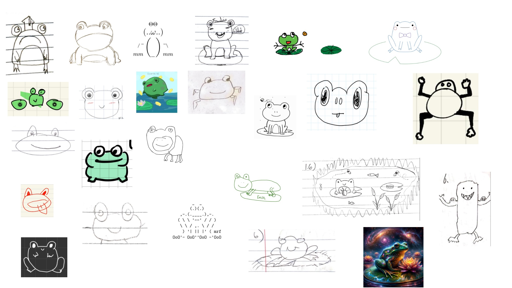

Introduction to Quantum Information and Computing

Announcements
- (February 8) Midterm 2 topics and practice posted.
Key Documents and Pages for the Course
- Make sure to read through the syllabus. I have outlined the expectations for myself and for you for this quarter amongst other things.
Staff and Contact Info
If you need assistance, please use the Ed discussion board. For personal accommodations you may email me directly.
Instructor:
- Shion Fukuzawa
- fukuzaws at uci dot edu
- Office hours: M 1-2pm @ ICS458B, WF 2-3pm @ ICS458C
TAs:
- Fan Wang
- Office hours: F 330-5pm @ ICS458A
- Kourosh Mirsohi
- Office hours: Th 2-3pm @ Location TBD
Course Outline
The following is the breakdown of the three modules we will divide the class into.
- Module 1: Math Foundations
- [done!] Probability and Complex numbers
- [done!] Quantum circuits
- [done!] Linear algebra
- Complexity
- Module 2: Quantum Information
- [here] No cloning theorem and quantum money
- Quantum teleportation and superdense coding
- Hidden variable theories, monogamy of entanglement, and the CHSH game
- Error correction
- Module 3: Quantum Computing
- Query algorithms: Deutsch-Josza, Bernstein-Vazirani, Simon’s
- Quantum Fourier Transform
- Shor’s algorithm
- Grover’s algorithm
- Phase estimation
Lecture notes
The following are digital copies of the lecture notes. I will post annotated versions as we progress through the course as well.
- Week 1 (unannotated notes, annotated notes)
- Probability and complex numbers, linear algebra A, quantum circuits A
- Week 2 and 3 (unannotated notes, annotated notes)
- Quantum circuits B
- Week 4-6:
- Information 1 - No cloning and quantum money (unannotated notes, annotated notes)
- Information 2 - Teleportation and superdense coding (unannotated notes, annotated notes)
- Information 3 - Hidden Variables and the CHSH Game (unannotated notes, annotated notes)
- Information 4 - Circuits and Complexity (unannotated notes, annotated notes)
Problem Sets
Please submit your problem sets to gradescope. If you do not have access to gradescope, let me know ASAP. Solutions will be posted to Canvas.
Assignments submitted by the due date will be graded and returned to you!
- Homework 1: Due Tuesday January 16 11:59pm.
- Homework 2: Due Wednesday January 24 16:00pm.
- Homework 3: Due Tuesday February 6 11:59pm.
- Homework 4: Due Tuesday February 13 11:59pm.
Practice midterms
- Midterm 1: Foundations (Jan 26)
- Content: First two sets of notes, first two homework assignments.
- Example midterm
- Midterm 2: Information (Feb 16)
- Content: Problems based on Information 1-4. Select three during the midterm to attempt.
- Example midterm
Test information
Midterm 2
No cloning + quantum money: - Understand the statement of the no cloning theorem, and be able to identify scenarios where it doesn’t apply. - Be able to construct circuits to clone simple states. - Understand the Weisner’s quantum money scheme. - This can be demonstrated by correctly simulating different portions of the quantum money protocol. - Be able to analyze the probability that the scheme succeeds or fails.
Teleportation and superdense coding - Successfully create a protocol for quantum teleportation, given any Bell pair shared between Alice and Bob and measurements by Alice. - Successfully create a protocol for superdense coding, given any Bell pair shared between Alice and Bob.
Hidden Variables and CHSH - Demonstrate saturation of Bell inequalities, and correctly analyze cases where the inequality gets violated with the introduction of entanglement.
Circuits and Complexity - Correctly categorize problems into P or NP - Have an idea of the necessary conditions for universality of quantum gates - Be able to simulate classical circuits using quantum circuits
Test rules:
- The tests are closed note and closed book. However, you may bring a 3 by 5 inch index card with notes you have written. If you need an index card please let me know before or after class on exam week and I can give you one.
- You are not allowed to use a calculator, cell phone, smart watch, or other electronic device during the tests.
- No talking during the tests.
- You will be assigned a seat posted online.
- Do not start writing on the test until told to do so.
- When the test period ends, we will tell you to stop writing. Please do so.
- Please remember to bring a writing implement. We recommend you have a backup writing emplement just in case: pens can run out of ink, pencils can break or become too dull to write legibly, etc.
- If you think that a question on the test is ambiguous, rather than ask a question, we recommend that you do the following on your answer sheet:
- List the different interpretations of the question
- State which interpretation you are using
- Give an answer consistent with that interpretation.
- To the extent that we can, we will try to grade your answer consistent with your interpretation. However, if your interpretation trivializes the question, you may lose points.